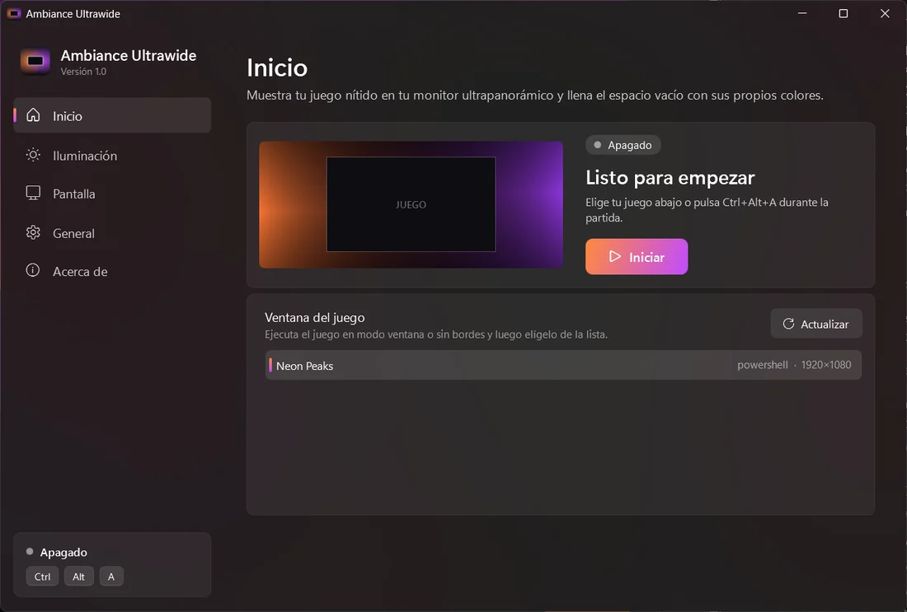
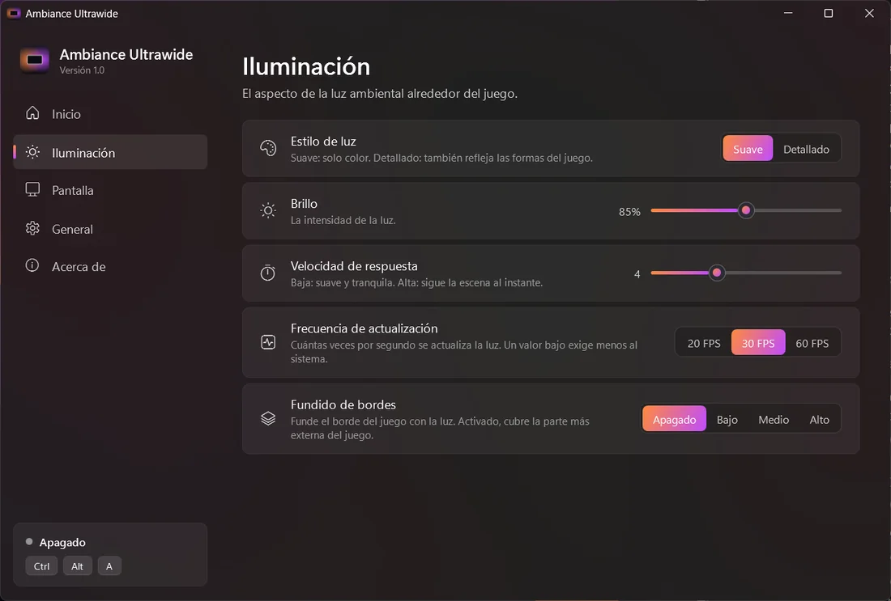

Ambiance Ultrawide
Luz ambiental sincronizada con tu juego.
Luz ambiental sincronizada con tu juego, para monitores ultrapanorámicos. Llena las barras negras alrededor del juego con un brillo suave, como la iluminación ambiental de un televisor. El juego se mantiene nítido píxel a píxel, sin perder FPS.
Gratis · Código abierto · Windows 10/11 · 12 idiomas

El juego sigue nítido y el espacio vacío brilla con su propia luz
Adiós a la baja resolución borrosa
Izquierda: resolución de Windows reducida. Derecha: Ambiance Ultrawide.


Llena la pantalla sin perder FPS
El juego dibuja los mismos píxeles; Windows los muestra más grandes

Luz suave o detallada
Un brillo de color tranquilo o uno que refleja las formas del juego

Elige tu juego y pulsa Iniciar
O pulsa Ctrl+Alt+A durante la partida

Ajusta la luz a tu gusto
Estilo, brillo, velocidad de respuesta y frecuencia

Características
Captura por GPU, ~1% de CPU. Nunca toca la memoria del juego.
- Luz ambiental sincronizada con la escena del juego
- Imagen nítida, sin el desenfoque de bajar la resolución
- Quita los bordes, redimensiona y centra el juego
- Llena la pantalla sin perder FPS
- Captura por GPU, ~1% de CPU
- Estilos de luz Suave y Detallado
- Ajustes de brillo, respuesta y frecuencia
- No toca la memoria del juego ni recopila datos
Acerca de
Convierte las barras negras de tu monitor ultrapanorámico en luz ambiental sincronizada con tu juego.
Cuando juegas a un juego 16:9 en un monitor 21:9 o 32:9, los lados quedan en negro. Ambiance Ultrawide los llena con un brillo suave que cambia en sincronía con la escena del juego, igual que la iluminación ambiental de los televisores modernos. Explosiones, atardeceres y luces de neón se desbordan por los bordes del juego, y toda la pantalla pasa a formar parte de él.
Dos estilos de luz: Suave (un brillo de color tranquilo) y Detallado (sigue las formas del juego). El brillo, la velocidad de respuesta y la frecuencia de actualización son ajustables.
Nítido, no borroso: bajar la resolución de Windows lo vuelve todo borroso. Ambiance Ultrawide, en cambio, muestra el juego en una ventana sin bordes, píxel a píxel y centrado. Si lo quieres más grande, puede ampliarlo hasta llenar la pantalla con la lupa de Windows, sin perder FPS.
Ligero para tu sistema: captura la pantalla con la tarjeta gráfica, alrededor del 1% de CPU. Nunca toca la memoria ni los archivos de tus juegos; solo lee lo que se ve en pantalla. No recopila datos ni se conecta a Internet.
Cómo usarlo: ejecuta el juego en modo ventana o sin bordes, elígelo en Ambiance Ultrawide y pulsa Iniciar. O pulsa Ctrl+Alt+A durante la partida. Ctrl+Alt+Z activa o desactiva la ampliación.
Gratis y de código abierto. Interfaz en 12 idiomas.